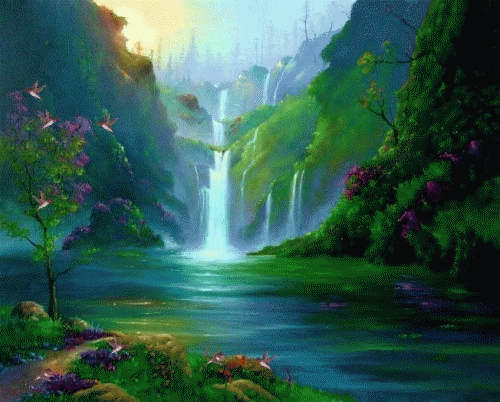
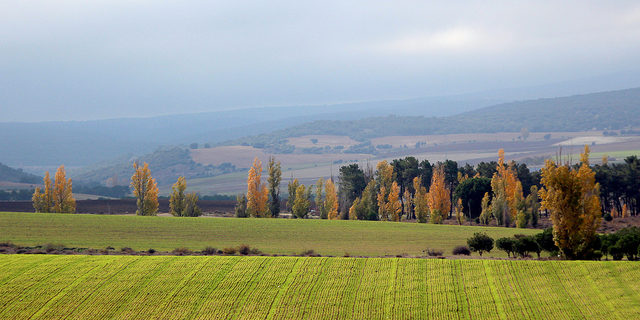
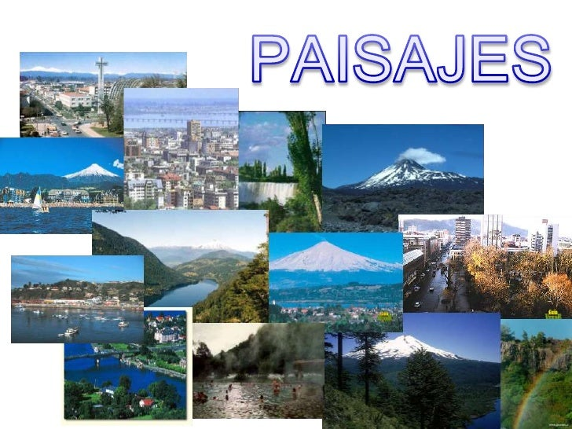

LOS PAISAJES FORMAN PARTE FUNDAMENTAL DE LA NATURALEZA, SIN EMBARGO, DEBEMOS TENER CLARO QUE TIENEN UN ASPECTO TEMPORAL,
YA QUE DEPENDEN DE LA FLORA Y LA FAUNA DE LA ZONA DE LA QUE SE TRATE; ADEMÁS, PUEDEN SER INTERVENIDOS POR ELEMENTOS EXTERNOS.
EL ESTUDIO QUE ENGLOBA A LOS PAISAJES Y A LAS INTERACCIONES QUE TIENEN CON OTROS ELEMENTOS (SEAN O NO DE LA NATURALEZA) SE
RESUME EN LA ECOLOGÍA DEL PAISAJE.

LA ECOLOGÍA DEL PAISAJE ES UNA DISCIPLINA ENTRE LA GEOGRAFÍA ORIENTADA REGIONALMENTE Y LA BIOLOGÍA, QUE ESTUDIA LOS PAISAJES TANTO NATURALES
COMO ANTRÓPICOS, PRESTANDO ESPECIAL ATENCIÓN A LOS GRUPOS HUMANOS COMO AGENTES TRANSFORMADORES DE LA DINÁMICA FÍSICO-ECOLÓGICA DE ESTOS.
CUÁL ES LA IMPORTANCIA DE LA ECOLOGÍA DEL PAISAJE:
POR ESO LA ECOLOGÍA DEL PAISAJE ES TAN IMPORTANTE. SE UTILIZA COMO UNA HERRAMIENTA BÁSICA EN LA ORDENACIÓN DEL TERRITORIO PERMITIENDO,
POR EJEMPLO, DISEÑAR REDES DE ESPACIOS PROTEGIDOS MÁS EFICIENTES DE CARA A LA CONSERVACIÓN MEDIO AMBIENTE.

CUÁL ES EL IMPACTO DE LA ECOLOGÍA DEL PAISAJE:
LA ECOLOGÍA DEL PAISAJE ES UNA DE LOS ENFOQUES POSIBLES EN LA EVALUACIÓN DEL IMPACTO AMBIENTAL DE LAS OBRAS Y ACTIVIDADES HUMANAS,
Y SE USA PRINCIPALMENTE EN LA ORDENACIÓN DEL TERRITORIO, Y EN EL ANÁLISIS DINÁMICO DE ECOSISTEMAS.
CUÁL ES SU PRINCIPAL FIN DE LA ECOLOGÍA DEL PAISAJE:
EL FIN ÚLTIMO DE LA ECOLOGÍA DEL PAISAJE ES INTEGRAR DE LA MEJOR MANERA POSIBLE HOMBRE Y NATURALEZA, LO QUE SIGNIFICA QUE SIEMPRE HAN
DE BUSCAR OPORTUNIDADES PARA LA ACCIÓN, SOBRE TODO HABIDA CUENTA DE LA CRÍTICA SITUACIÓN QUE SUFRE EL PLANETA Y DE CÓMO ELLO INFLUYE
EN EL FUTURO MISMO DE LA HUMANIDAD.

CUÁLES SON LOS CAMBIOS EN EL PAISAJE:
UN PAISAJE MODIFICADO ES UN SECTOR EN DONDE DIVERSAS PRÁCTICAS DE LOS SERES HUMANOS (COMO POR EJEMPLO INDUSTRIALES Y AGRÍCOLAS) Y
LA UTILIZACIÓN DEL FUEGO O CUALQUIER OTRA FUERZA DE LA NATURALEZA HAN MODIFICADO EL MEDIO DE FORMA TOTALMENTE IRREVERSIBLE,
AUNQUE LOS RASTROS DE ESE CAMBIO NO PUEDAN APRECIARSE A SIMPLE.
CÓMO SE LLEVA A CABO LA EVOLUCIÓN DEL PAISAJE:
LA SUPERFÍCIE TERRESTRE SIEMPRE ESTÁ CAMBIANDO POR EFECTO DE LA EROSIÓN. AHORA, UNA NUEVA TÉCNICA PERMITE A LOS CIENTÍFICOS
RECONSTRUIR ALGUNOS PAISAJES DEL PASADO Y PRONOSTICAR LOS DEL FUTURO. LA CLAVE SE HALLA EN LAS VARIACIONES QUE EXPERIMENTA CON
EL TIEMPO LA FORMA DE LOS LÍMITES DE LOS RÍOS.
CUÁLES SON LOS DIFERENTES TIPOS DE PAISAJE:
LOS ELEMENTOS DEL PAISAJE NATURAL MÁS UTILIZADOS SON LOS BOSQUES, LAS SELVAS Y LOS DESIERTOS. EL PAISAJE NATURALISTA
ES DE LOS TIPOS DE PAISAJES QUE SE CENTRAN EN REPRESENTAR UNA NATURALEZA ABUNDANTE, GRANDIOSA Y SALVAJE.